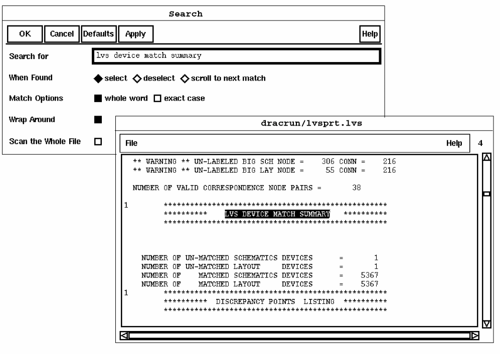
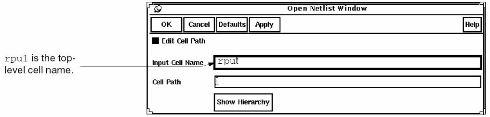

4
Analyzing LVS Errors
This chapter deals with Layout Versus Schematic (LVS) in the Dracula® graphical user interface product. This chapter covers the following topics:
- About LVS
- Starting the Dracula Graphical User Interface’s LVS
- Interpreting the Discrepancy Report
- Checking Netlist Connectivity
- Displaying and Highlighting LVS Errors
- Quitting the Tutorial
- Summary
About LVS
Layout Versus Schematic (LVS) analysis is often the most time-consuming phase of the design verification process. The devices that cause errors in the layout can be difficult to locate if you have to manually zoom in and out to check each device listed in the LVS discrepancy report.
The graphical user interface’s LVS commands help you analyze and locate LVS errors faster. You can display the schematic netlist in one window and the corresponding Dracula layout in another window. You can also select data in one window, such as nets or devices in the netlist window, and display corresponding information in another window.
This chapter introduces you to some of the ways you can use the graphical user interface to display and identify Dracula LVS errors. The procedures help you find the short in the tutorial data.
In this chapter, you’ll learn how to
- Start the Dracula graphical user interface
- Interpret the discrepancy report
- Check netlist connectivity
- Display and highlight LVS errors
- Quit the Cadence software
Starting the Dracula Graphical User Interface’s LVS
Create and open an empty cell before you start this section. Chapter 1, “About the Dracula Graphical User Interface” explains how to create and open an empty cell.
- In your dracrun directory, use a text editor to open the CELLTABLE.HTV file.
-
Replace the path in the first line of the file with your full tutorial directory path:
<your_working_directory_path>/tutorial/dracrun/
Accessing Dracula Error Files
Now you’ll start the graphical user interface and tell the software where to find your Dracula error files. If you haven’t started graphical user interface yet, read Chapter 1, “About the Dracula Graphical User Interface.”
-
To display the LVS commands, click left on the LVS menu.
-
Select Setup from the LVS menu.
The LVS Setup form appears. -
To tell the graphical user interface where to find your Dracula LVS files, type dracrun for the Dracula Data Path.
If you did not start the software in the directory where the Dracula LVS files are located, you must give the complete path to the files.
- Click left on OK.
Now the graphical user interface knows where to find your Dracula LVS error files. Next you’ll open the discrepancy report that lists LVS errors.
Interpreting the Discrepancy Report
When you run Dracula LVS, the software creates a discrepancy report that lists inconsistencies between the layout and schematic data. You use the information in the discrepancy window to determine which data you want to display in the netlist and graphical user interface windows. See the
You can use the graphical user interface to find and display the devices listed in the discrepancy report. Next you’ll use graphical user interface to automatically display specific devices to help you locate the error in the sample Dracula layout.
Displaying the Discrepancy Report
-
From the LVS menu, select Show Discrepancy Report.
The Show LVS Discrepancy Report form appears.

-
Click left on OK.When you are working on your own designs, the first thing you need to do is check the REDUCE SUMMARY REPORT section of the LVS report. If LVS reduces devices on the schematic and layout differently, you need to examine the connections to the devices and resolve the differences. If you do not resolve the differences, LVS cannot match the networks.
The discrepancy report appears in a new window.
-
Check the REDUCE statistics in the report.
The layout had 12790 MOS devices. REDUCE combined them into logic gates, leaving 1752 MOS devices uncombined.
The schematic had 11378 MOS devices. REDUCE combined them to make the same logic gates it found in the layout and left the same number of uncombined MOS devices. -
Scroll down to the LVS DEVICE MATCH SUMMARY.
You can see in the next figure that the layout and schematic each have one unmatched device. You use the discrepancies that follow to find out which devices are not matched. You use the highlight and cross-probing capability of the graphical user interface to find the unmatched devices in the layout and schematic.
You can use File – Search in the discrepancy report window to search for any text string in the discrepancy report.
 -
Scroll the discrepancy report until you see DISCREPANCY 1 at the top of the window.
Discrepancy 1 is a matched node, net6439, with extra layout devices. The extra layout device is listed at the end of the discrepancy:
***** UN-MATCHED ***** : ?DEV15181 NAND
: X=1079.40 Y=706.50
X_rp-X_r2-w000062,
X_rp-X_r2-w000304, net6439
Discrepancy 2 is a matched node, dataout<3>, with extra schematic devices. The extra schematic device is listed toward the end of the discrepancy:
?DEV13735 NAND :***** UN-MATCHED *****
X_rp-X_r2-w000062, dataout<3>,
X_rp-X_r2-w000304
The unmatched devices are noted with ? preceding their names. The name of the unmatched layout device is the internal name given by Dracula.
Discrepancies 3 and 4 are nodes, X_rp-X_r2-w000304 and X_rp-X_r2-w000062, with unmatched devices, both layout and schematic.
These discrepancies indicate that nodes net6439 and dataout<3> might be connected incorrectly.
-
To make room on the screen for the other windows, iconify the discrepancy report window.
Now that you’ve used the discrepancy report to identify the devices that aren’t matched correctly, you’ll use the graphical user interface to locate the unmatched devices by highlighting the nets and devices in the layout and in the netlist.
Checking Netlist Connectivity
The netlist window lists the schematic netlist. This window makes it easier for you to compare the netlist connectivity to the Dracula layout data so you can identify inconsistencies.
You identified dataout<3> as a net with an extra schematic device and net6439 as a net with an extra layout device. Now you’ll display these nets in the netlist window and in the layout window to see where they appear.
Opening the Netlist Window
-
From the LVS menu, select Open Netlist Window.
The Open Netlist Window form appears.
 -
Click left on OK.
The netlist window appears. If the netlist window doesn’t appear, see “Starting the Dracula Graphical User Interface’s LVS” for details about what you need to do. - To minimize how much the windows overlap, resize the layout and netlist windows and place them side by side.
-
In the graphical user interface window, from the icon menu select Fit Edit.The locations of the commands in your icon menu might be different. To identify a command name in the icon menu, move the cursor over an icon.Now you are ready to show the nets.
Displaying and Highlighting LVS Errors
The discrepancy report lists discrepancies between schematic and layout devices. Based on this information, you’ll highlight the discrepancies in both the graphical user interface and netlist windows to help you identify the error.
Displaying Nets and Devices in the Dracula Graphical User Interface and Netlist Windows
Now you’ll highlight nets and devices in the graphical user interface and netlist windows.
-
In the Error Hilite section of the View LVS form, in the Number field type 1.
When you looked at the discrepancy report, you saw that discrepancy 1 listed net6439 as a node with an extra layout device. Extra layout devices often indicate a misconnection in the layout, so you want to display this node in the graphical user interface window.
-
Click on Add.
The node with extra layout devices, net6439, appears in the graphical user interface window. This node is also highlighted in the netlist window.
Because extra layout devices indicate a misconnection in the layout, you want to display any extra layout devices in the graphical user interface window.
Highlighting Unmatched Devices in the Dracula Graphical User Interface Window
In the discrepancy report, you saw the following discrepancies:
You’ve already highlighted the node with an extra layout device. Now you will highlight the unmatched device for that node.
- Select Net Hilite from the View LVS form.
-
To highlight the unmatched devices on net6439, set the following options.:
-
Click left on Add.
The display for net6439 changes color and the unmatched devices are highlighted in white. The unmatched devices aren’t matched in the netlist, so they aren’t highlighted in the netlist window.
Zooming In on the Unmatched Devices
To zoom in on the area around the unmatched devices in the graphical user interface window, follow these steps.
-
To view the unmatched devices, do one of the following:
- To zoom in around the unmatched devices, from the View LVS form, select Fit Current Hilite.
- To get a larger view, use the Zoom Out icon.
The graphical user interface window zooms in on the area you specified. The enlarged image you see in this window makes it easier to see where the short occurs.
Now you can cross-probe the dataout<3> net from the netlist window to display it in the graphical user interface window. -
To select dataout<3>, double click left on it in the netlist window.
-
To identify where dataout<3> appears in the netlist window, select
Dracula Interactive – Display Net.
The dataout<3> net is highlighted in a different color in all of the locations where it appears in the netlist window. The layout net matched to dataout<3> is highlighted in the graphical user interface window.
When you select a matched net in the netlist window, the graphical user interface window displays the layout node it matches. When you select a matched net in the graphical user interface window, the netlist window displays the schematic node it matches.
Identifying the Unmatched Devices
Now that you’ve highlighted the two nets with errors you’ll use other discrepancies to help identify the problem. Typically, it is easier to analyze LVS discrepancies for nets that have only a few devices.
- Reopen the discrepancy report window.
-
Scroll down in the discrepancy report window to Discrepancy 4, node X_rp-X_r2-w000062 with un-matched devices.
This discrepancy shows the unmatched schematic device and the unmatched layout device.
You can use the hierarchy information in the report to navigate through the netlist. Hierarchical names are listed as follows:
- Iconify the discrepancy report window.
-
Double-click left on X_rp in the netlist window.
X_rp is the top-level instance. The dataout<3> and net6439 nets are inputs to X_rp. -
To descend one level in the netlist hierarchy, select
Show Subcircuit from the graphical user interface menu in the netlist window.
The netlist window displays the next lowest level. The subcircuit nets connected to dataout<3> and net6439 are highlighted in the same colors as in the parent. -
In the netlist window scroll down to X_r2.
X_r2 is highlighted in the same color as the dataout<3> net, which is one of its inputs. - Double click left on X_r2 in the netlist window.
-
From the graphical user interface menu in the netlist window, select Show Subcircuit.
The NAND2_B device X_mod000623 is connected to nets w000062 and regin<3>. The regin<3> node is highlighted in the same color as dataout<3>, indicating that it is the same net as dataout<3>.
The discrepancy report lists the connections to a device in “output input input” order. In the discrepancy report, discrepancy 4 shows the unmatched layout device, DEV13735, connected to the following nets:
The output of DEV15181, the unmatched layout device, is connected to the same net, X_rp-X_r2-w000062, as the output of the unmatched schematic device. Its inputs are connected to
Based on the discrepancy report you can conclude that DEV15181 should be connected to dataout<3> instead of net6439 and should match schematic device X_mod000623.
Quitting the Tutorial
At this point, you might want to continue working with graphical user interface. If you’d like to continue, you can leave the windows you used for the tutorial on the screen or you can close them. If you want to close the windows, go to the
When you are ready to quit the Cadence software, go to the
Summary
In this chapter, you learned how to use graphical user interface to analyze LVS errors. Specifically, you learned to
- Start Dracula graphical user interface
- Interpret the discrepancy report
- Check netlist connectivity
- Display and highlight LVS errors
- Quit the Cadence software
Return to top